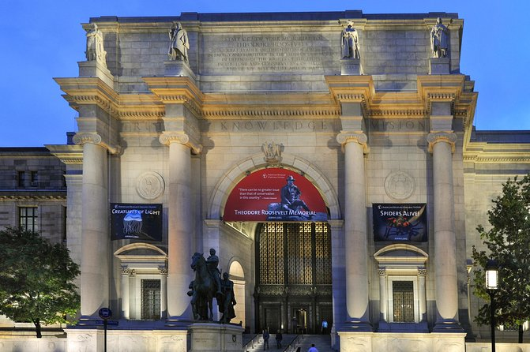
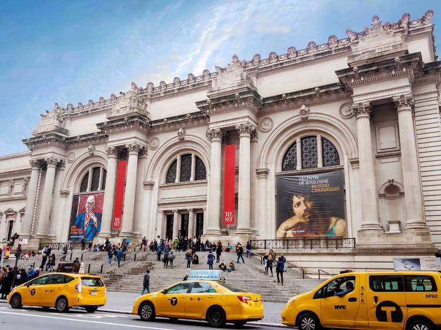

The Museum of Natural History contains some of the most scientificially relevant collections in the world. Through its various exhibitions, you not only gain an idea of the process of evolution but you feel as though you are a part of it yourself. Video source: ML Walks on YouTube
The Metropolitan Museum of Art is currently the most popular museum in New York. it contains a whopping two-million works in total, ranging from Egyptian to Medival art. A visit to this museum is essential for art enthusiasts and history fans as well. Video source: The Met on YouTube
Last but definetely not least, the Guggenheim is famous not only for its iconic swirl design, but for works of Pablo Piccasso, Van Gogh, Andy Warhol, and Claude Monet. Overall, the museum's beauifully unique design and historic works make for an incredible viewing experience. Video source: Guide For The Traveler on YouTube